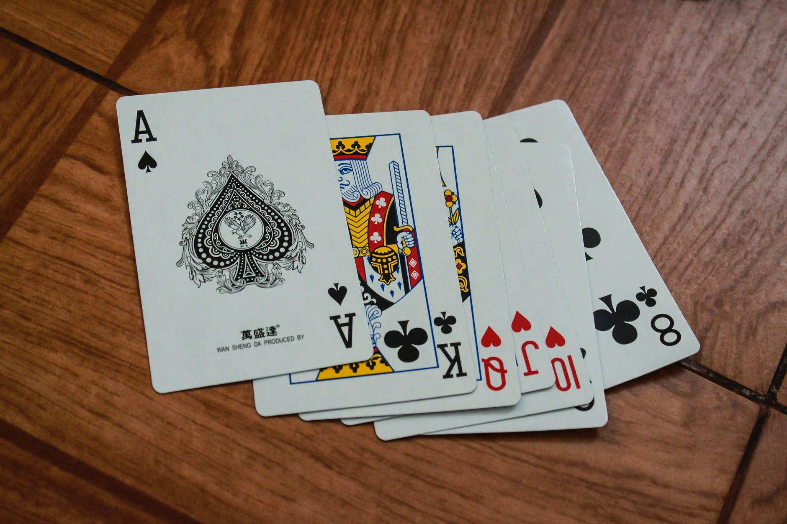

Hello! My name is Niles and I'm currently a student at Epicodus. I've been living in Oregon since I was a baby and love this state. I'm a profession scuba diver and was living in Thailand before the pandemic hit. My current goals are to graduate this program and become a digital nomad, diving and coding anywhere in the world they'll have me!
Pre-21 era (before proper adulthood)
I grew up in Lincoln City, Oregon. After graduating high school I went to Portland Community College for 2 years and graduated with an Associates of Science and an Associates of Arts.
Work History
I've been a waiter for the majority of my adult life before deciding to take the plunge and become a profession scuba diver in 2019. Diving in Thailand was one of the most memorable experiences of my life and I'd love to get back into it once tourism and travel are back into full swing.
Hobbies